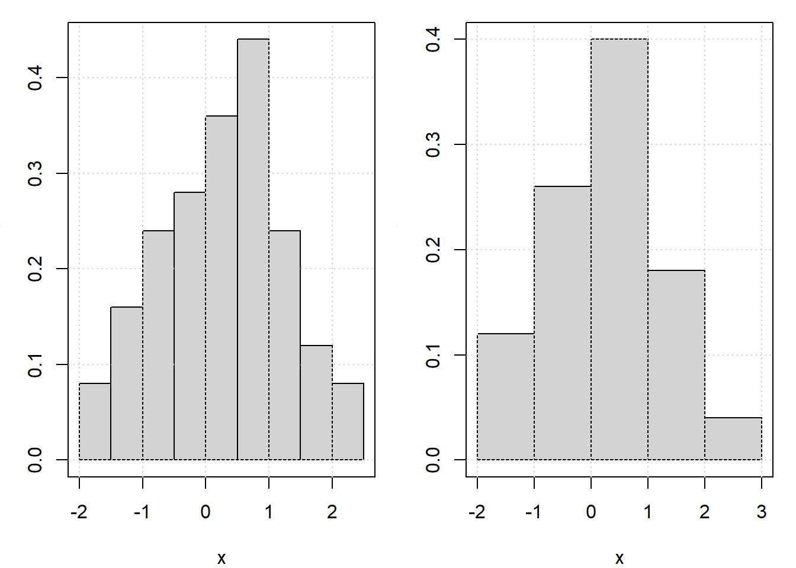
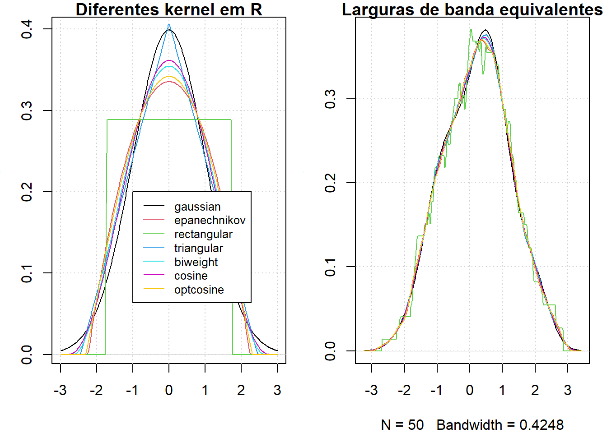
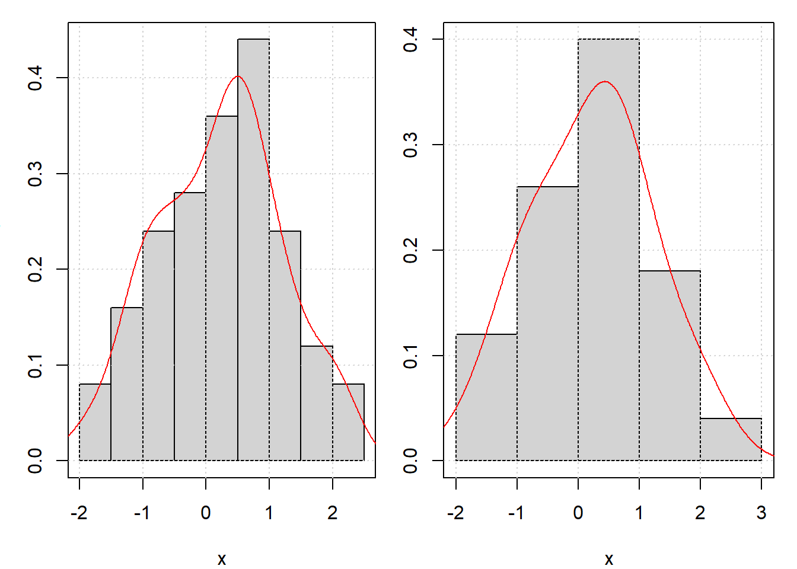

De certa forma, problemas de estimação não-paramétrica são extensões de problemas de estimação paramétrica, mas a natureza do primeiro é bem diferente do último. Considere, por exemplo, a situação de observações independentes identicamente distribuídas, digamos \(X_1,X_2,\cdots,X_n\).
Em um problema paramétrico, assumimos que a distribuição de \(X_i\) é \(F(\cdot;\theta)\), a qual é totalmente especificada até o vetor de parâmetros \(\theta\); então o problema é essencialmente a estimaçã de \(\theta\). Em um problema não-paramétrico, a distribuição é totalmente desconhecida com, talvez, algumas restriçõs em propriedades gerais e, portanto, é denotada por \(F\).
Aqui consideramos estimadores de \(F\) em termos de função de densidade \(f\). A função de densidade tem a vantagem de fornecer uma representação visualmente mais informativa do que a função de distribuição. Por exemplo, o histograma geralmente dá uma ideia aproximada da forma da distribuição. Este último ficou como o único estimador de densidade não paramétrico até 1950. Por essa razão, nossa discussão começará com os histogramas.
Embora o histograma seja usado extensivamente, não é tão frequente que seja necessária uma definição matemática. Uma maneira de defini-lo é através da função de densidade empírica.
5.1 Função de densidade empírica.
Definição. Seja \(f\) a derivada de \(F\), por isso, pode-se escrever como \[
f(x) = \lim_{h\to 0} \dfrac{F(x+h)-F(x-h)}{2h}\cdot
\] Dizemos então que \(\widehat{f}\), defnido por \[
\widehat{f}_n(x)=\dfrac{\widehat{F}_n(x+h)-\widehat{F}_n(x-h)}{2h},
\] é o histograma, sendo que \(\widehat{F}\)_n é a função de distribuição empírica.
Um histograma é uma representação gráfica da função de probabilidades ou da função de densidade de um conjunto de dados independentes e foi introduzido pela primeira vez por Karl Pearson no artigo Pearson, K. (1895). Contributions to the Mathematical Theory of Evolution. II. Skew Variation in Homogeneous Material. Philosophical Transactions of the Royal Society A: Mathematical, Physical and Engineering Sciences 186: 343-414.
A representação mais comum do histograma é um gráfico de barras verticais. A palavra histograma é de origem grega, derivada de duas: histos que pode significar testemunha no sentido de aquilo que se vê, como as barras verticais do histograma e da também palavra grega gramma que significa desenhar, registrar ou escrever.
Para construir um exemplo controlado do gráfico de histograma, simulamos uma amostra de tamanho 150 da distribuição normal padrão, com o comando rnorm e depois construímosum gráfico colorido, abaixo a esquerda. Posteriormente, acrescentamos a este gráfico uma linha com a densidade normal, abaixo a direita.
Figure 5.1: Gráfico de histograma para dados simulados.
A ideia é mostrar que o histograma assemelha-se ao gráfico da densidade normal, a densidade dos dados.
5.2 Histograma, informalmente
Definição. Matematicamente o histograma é uma função \(m_i\) que conta o número de observações que pertencem a vários intervalos disjuntos, entanto que o gráfico do histograma ou simplesmente histograma é uma mera representação desta função. Assim, se \(n\) representa o total de observações e \(k\) o número de intervalos disjuntos, o histograma satisfaz que \[
n=\sum_{i=1}^k m_i\cdot
\]
O histograma é um gráfico composto por retângulos justapostos em que a base de cada um deles corresponde ao intervalo de classe e a sua altura à respectiva frequência. A construção de histogramas tem caráter preliminar em qualquer estudo e é um importante indicador da distribuição de dados. Pode indicar se uma distribuição aproxima-se de uma densidade normal como pode indicar mistura de densidades, quando os dados apresentam várias modas.
Os histogramas podem ser um mau método para determinar a forma de uma distribuição porque são fortemente influenciados pelo número de intervalos utilizados. Por exemplo, decidimos gerar 50 amostras da densidade \(\chi^2(6)\) e mostramos os gráficos de histogramas correspondentes com 14 e 26 intervalos na Figura 2.
Figure 5.2: Histogramas da distribuição chi² com 6 graus de liberdade. Número de intervalos 14 e 26, respectivamente.
Vejamos agora uma definição mais clara do histograma.
5.3 Histograma
Definição: Sejam \(I_1,\cdots,I_k\) intervalos disjuntos do suporte da função de probabilidade ou de densidade da variável aleatória \(X\). O histograma é definido por \[
\widehat{f}_n(x) = \dfrac{m_i}{n|I_i|}, \quad \forall x\in I_i, \;
i=1,\cdots,n,
\] onde \(|I_i|\) representa o comprimento do intervalo \(i\), \(m_i\) e \(n\) como na Definição 1.
Foi provado por Robertson (1967) que, dados os intervalos \(I_1,I_2,\cdots,I_k\), o histograma \(\widehat{f}_n\) é um estimador de máxima verossimilhança dentre os estimadores expressados como funções simples e semi-contínuas superiormente, isto se o fecho de cada intervalos contiver duas ou mais observações. Os gráficos apresentados nas figuras acima são histogramas também segundo a proposta de Robertson (1967).
Pode-se observar que este estimador tem duas limitações importantes: a dependência do comprimento do intervalo e o fato de o histograma não constituir uma função contı́nua. A primeira destas limitações foi amplamente estudada por Wegman (1975). Ele provou que os pontos extremos de cada intervalo \(I_k\) devem ser coincidentes com observações e que, se o número mínimo de observações em cada intervalo aumenta, conforme aumenta o tamanho da amostra, o estimador \(\widehat{f}_n\) é consistente.
A segunda limitação importante do histograma, isto é, o fato de ele não constituir uma função contı́nua, incentivou diversos estudos na procura de estimadores contı́nuos da função de densidad.
5.3.1 Cálculo automático do número de intervalos num histograma
Uma questão importante é determinar de maneira automatizada o número de intervalos disjuntos que serão utilizados para a construção do gráfico. Uma primeira forma de escolher o número de intervalos foi dada por Sturges (1926) e que constitui a forma padrão no R. Conhecida como fórmula de Sturges é dada por
\[
k= [\log_2(n) + 1],
\]
isto significa que o número de intervalos é a parte inteira do logaritmo base 2 do número de observações mais 1.
Outras expressões comumente utilizadas são a fórmula de Scott (Scott, 1979) \(h = 3.5s/\sqrt{n}\), onde \(s\) é o desvio padrão amostral e a fórmula de Freedman-Diacconi (Freedman and Diaconis, 1981) \(h = 2\mbox{IQR}(x)/ n\), onde \(\mbox{IRQ}\) é a diferença entre o terceiro e o primeiro quantil.
Uma outra forma de definir o histograma é utilizando o estimador empírico da função de distribuição.
5.4 Histograma, definição moderna.
Definição: Na definição de função de densidade empírica, o parâmetro \(h\) é chamado de largura de banda. Podemos escrever o histograma \(\widehat{f}_n\), como, \[
\widehat{f}_n(x)=\dfrac{1}{2nh}\sum_{i=1}^n
\pmb{1}_{(x-h;x+h)}(X_i)\cdot
\]
Podemos excrever a função de densidade como \[
f(x)=\lim_{h\to 0} \dfrac{1}{h}\big(F(x+h)−F(x−h)\big),
\] mas não se pode definir daqui o histograma porque esse limite é zero ou infinito e, assim, em algum momento é preciso parar, em outras palavras, não se pode chegar muito perto de zero.
Teorema 5.1
Seja \(f\) a função de densidade associda à função de distribuição \(F\). Então, com probabilidade 1, \[
\widehat{f}_n(x)\sim \mbox{Binomial}(n,p),
\] com \(p=F(x+h)-F(x-h)\). Assim, o comportamento assintótico do histograma pode ser derivado da distribuição binomial como \[
\mbox{E}\big(\widehat{f}_n(x)\big)=\dfrac{F(x+h)-F(x-h)}{2h}
\] e \[
\mbox{Var}\big( \widehat{f}_n(x)\big)=\dfrac{p(1-p)}{2nh^2}\cdot
\]
Demonstração. Exercício,
Deste teorema segue que \(\widehat{f}_n(x)\) é um estimador consistente pontual de \(f(x)\) quando \(h\to 0\) e \(nh\to\infty\). A seguir, o processo de limite é entendido como \(h=h_n\), ou seja, entende-se disto que \(h\) não será mais uma quantidade fica e sim uma quantida que depende do tamanho da amostra. A suposição \(h=h_n\) dese satisfazer as condições do Teorema 1, de maneira que, \(h_n\to 0\) e \(nh_n\to\infty\). Estas condições podem ser interpretadas como se fosse necessário \(h_n\) ir a zero, mas não muito rápido. Isso é exatamente o que temos especulado, exceto que agora temos a taxa exata de convergência, que pode ser escrita como \(h_n=o(n)\).
Exemplo 1: Dados simulados.
Utilaremos 50 dados simulados da distribuíão \(N(0,1)\), com isso mostraremos o histograma destes 50 dados utilizando duas formas diferentes de encontrarmos uma expressão para \(h_n\), a chamada largura de banda.
Code
set.seed(1340)x =rnorm(50)par(mfrow =c(1,2), mar=c(4,3,1,1))hist(x, main =NULL, freq =FALSE, breaks ="Sturges")box(); grid()hist(x, main =NULL, freq =FALSE, breaks ="Scott")box(); grid()

Neste exemplo utilizamos duas formas de escolher a largura de banda \(h_n\) dentre três diferentes possibilidades programadas na função hist. Por padrão escolhe-se breaks = “Sturges”, proposto por Sturges (1929), o qual sugere que
A segunda situação indica que se os dados provêm da distribuição Normal temos que \(h_n=3.49sn^{−1/3}\) sendo \(s\) o desvio padrão estimado. Esta proposta deve-se à Scott (1979). Embora o histograma é um estimador consistente quando \(h_n\to 0\) e \(nh_n\to\infty\), verifica-se que se pode fazer melhor. A melhoria também é motivada por uma preocupação prática: o histograma não é uma função suave, uma propriedade que se pode esperar que qualquer função de densidade real tenha.
5.5 Estimador kernel.
Definição: O estimador kernel da função de densidade é dado por \[
\widehat{f}_n(x)=\dfrac{1}{nh_n}\sum_{i=1}^n
K\left(\dfrac{x-X_i}{h_n}\right),
\] onde \(K(\cdot)\) é uma função conhecida como kernel.
É tipicamente assumido que \(K\) seja não-negativa, simétrica em torno de zero e satisfaz \(\int K(u)\mbox{d}u=1\). Claro que o histograma é um caso especial do estimador do kernel se \(K\) for escolhido como a função de densidade \(\mbox{Uniforme}(−1,1)\). O último não é uma função suave e é por isso que o histograma não é suave; mas escolhendo \(K\) como uma função suave, tem-se um estimador de \(f\) que seja suave. Por exemplo, escolhendo a função de densidade \(N(0,1)\), temos por resultado o conhecido como kernel Gaussiano e assim também se utilizamos a densidade de densidade \(\mbox{Beta}\) simétrica, dada por \[
K(u)=\dfrac{\Gamma(\nu+3/2)}{\Gamma(1/2)\Gamma(\nu+1)}(1-u^2)^\nu, \quad
-1<u<-1\cdot
\] e \(K(u)=0\) caso contrário. Os casos especiais \(\nu=0,1,2,3\) correspondem às funções kernel uniforme, Epanechnikov, biweight e triweight, respectivamente.
Code
par(mfrow =c(1,2), mar=c(4,3,1,1))kernels =eval(formals(density.default)$kernel)plot (density(0, bw =1), xlab ="", main ="Diferentes kernel em R"); grid()for(i in2:length(kernels)) lines(density(0, bw =1, kernel = kernels[i]), col = i)legend(-1.0,0.2, legend = kernels, col =seq(kernels), lty =1, cex = .8, y.intersp =1)h.f =sapply(kernels, function(k) density(kernel = k, give.Rkern =TRUE))h.f = (h.f["gaussian"] / h.f)^ .2bw =bw.SJ(x) # escolha automáticaplot(density(x, bw = bw), main ="Larguras de banda equivalentes"); grid()for(i in2:length(kernels)) lines(density(x, bw = bw, adjust = h.f[i], kernel = kernels[i]), col = i)legend(55, 0.035, legend = kernels, col =seq(kernels), lty =1)

5.6 Escolha automática da largura de banda
Um problema prático importante na estimação de densidades via kernel é como escolher a largura de banda \(h_n\) de forma automática. Note que, dadas condições como \(h_n\to 0\) e \(nh_n\to\infty\), ainda existem muitas opções para \(h_n\). Então, de certo modo, a ordem de convergência ou divergência não resolve o problema. Uma solução para esse problema é conhecida como compensação de viés-variância. Antes de entrarmos nos detalhes, vamos primeiro apressentar um resultado em relação ao viés assintótico do estimador kernel. Aqui, o viés é definido como
\[
\mbox{viés}\big( \widehat{f}_n(x)\big)=\mbox{E}\big(
\widehat{f}_n(x)\big)-f(x),
\] para todo \(x\in\mathbb{R}\).
Teorema 5.2
Seja \(f\) uma função de densidade contínua e limitada. Então, o viés do estimador kernel de desnidade converge a zero quando \(h_n\to 0\), para todo \(x\),
Demonstração.\[
\begin{array}{rcl}
\mbox{E}\big(\widehat{f}_n(x) \big) & = & \displaystyle
\dfrac{1}{n}\sum_{i=1}^n \dfrac{1}{h_n} \int
K\left(\dfrac{x-u}{h_n}\right)f(u)\mbox{d}u \\
& = & \displaystyle \int K(u)f(x-h_nu)\mbox{d}u \, = \, f(x) +
\int K(u)\big( f(x-h_nu)-f(x)\big) \mbox{d}u\cdot
\end{array}
\] Utilizando então o Teorema da Convergência Dominada completa-se a demonstração.
Teorema 5.3
Suponhamos que \(f\) seja contínua três vezes diferenciável, com terceira derivada limitada na vizinhança de \(x\) e \(K\), função kernel, satisfazendo que \[
\int K^2(u)\mbox{d}u< \infty \quad \mbox{e} \quad \int |u^3|
K(u)\mbox{d}u < \infty \cdot
\] Se \(h_n\to 0\), quando \(n\to\infty\), temos que \[
\mbox{viés}\big(
\widehat{f}_n(x)\big)=\dfrac{h_n^2}{2}f''(x)\int u^2
K(u)\mbox{d}u + o(h_n^2)\cdot
\] Se, além disso, \(bh_n\to\infty\) quando \(n\to\infty\), temos \[
\mbox{Var}\big(\widehat{f}_n(x)\big)=\dfrac{f(x)}{nh_n}\int
K^2(u)\mbox{d}u+o(1/nh_n)\cdot
\]
Demonstração. A demonstração é baseada na expansão de Taylor, \[
f(x-h_n u)=f(x)-h_n u f' (x)+\dfrac{h_n^2 u^2}{2}
f''(x)-\dfrac{h_n^3 u^3}{6}f''' (\epsilon),
\]
sendo que \(\epsilon\) fica entre \(x−h_n u\) e \(x\). Os detalhes são deixados como um exercício.
Uma medida de precisão do estimador é o erro quadrático médio (EQM), dado por \[
\mbox{EQM}\big(
\widehat{f}_n(x)\big)=\mbox{E}\big(\widehat{f}_n(x)-f(x)\big)^2\cdot
\]
É fácil mostrar que o EQM combina o viés e a variância de tal maneira que
\[
\mbox{EQM}\big(
\widehat{f}_n(x)\big)=\mbox{viés}\big(\widehat{f}_n(x)\big)^2+\mbox{Var}\big(\widehat{f}_n(x)\big)\cdot
\] Vemos que, sob as condições \(h_n\to
0\) e \(nh_n\to\infty\) e, se ignorarmos os termos de baixa ordem, temos
Note ainda que a expressão acima não é a solução ideal, isso porque \(f\) é desconhecida na prática. No entanto, dá-nos pelo menos alguma ideia sobre a taxa ideal de convergência a zero, sendo esta \(h_n=O(n^{-1/5})\).
Quando \(f\) é desconhecida, uma abordagem natural seria substituí-lo por um estimador e, assim, obter uma largura de banda ideal estimada. Uma complicação é que a largura de banda ideal depende de \(x\) mas, idealmente, gostaríamos de usar uma largura de banda que funcionasse para diferentes \(x\) dentro de um certo intervalo, se não todos os \(x\).
Para obter uma largura de banda ideal que não depende de \(x\), integramos os dois lados da expressão do EQM em relação a \(x\). Isto nos leva a
com \(\theta^2=\displaystyle \int \big( f''(x)\big)^2 \mbox{d}x\). Pelo mesmo argumento, o lado direito acima é minimizado quando
\[
h_n=\left( \dfrac{\gamma^2}{\tau^4\theta^2}\right)^{1/5}n^{-1/5}\cdot
\] Desta vez, o \(h_n\) ideal não depende de \(x\). Além disso, a integral do EQM ou o IEQM mínimo é dado por
Uma implicação do resultado acima é a seguinte. Note que o IEQM depende do kernel \(K\) através de \(c_K=\big(\tau\gamma^2\big)^{4/5}\). Mostrou-se que para os kernels comumente usados, tais como aqueles listados, o desempenho dos estimadores de kernel correspondentes é quase o mesmo em termos dos valores de \(c_K\).
Voltando ao problema sobre a estimação da largura de banda ideal, vemos que tudo o que precisamos é encontrar um estimador consistente de \(\theta^2\). Se \(f\) é a função de densidade da distribuição normal com desvio padrão \(\sigma\), então pode ser mostrado que \(\theta^2=3/8\sqrt{\pi}\sigma^5\). Naturalmente, se alguém souber que \(f\) é normal, então a estimação da densidade não-paramétrica não seria necessária, porque um método paramétrico provavelmente seria melhor. Em geral, pode-se expandir \(f\) em torno da densidade gaussiana usando a expansão de Edgeworth.
Utilizando a abordagem acima, Hjort and Jones (1996) obteveram o seguinte estimador ótimo para a largura de banda \[
\widehat{h}_n=\widehat{h}_0\left(
1+\dfrac{35}{48}\widehat{\gamma}_4+\dfrac{35}{32}\widehat{\gamma}^2_3+\dfrac{385}{1024}\widehat{\gamma}^2_4\right)^{-1/2},
\] onde \(\widehat{h}_0\) é a estimativa ideal da largura de banda assumindo que \(f\) é normal, isto é, com \(\theta^2\) substituído por \(3/8\sqrt{\pi}\sigma^5\) ou mais explicitamente
Chamamos \(\widehat{h}_0\), a largura de banda da linha de base e \(\widehat{\sigma}^2\), a variância amostral, dada por
\[
\widehat{\sigma}^2 = \dfrac{1}{n-1}\sum_{i=1}^n
(x_i-\overline{x})^2\cdot
\] Além disso, 4_3$ e \(\widehat{\gamma}_4\) são os estimadores dos coefcientes de assimetria e curtose amostrais, respectivamente, dados por \[
\widehat{\gamma}_3=\dfrac{1}{(n-1)\widehat{\sigma}^3}\sum_{i=1}^n
(x_i-\overline{x})^3
\] e
\[
\widehat{\gamma}_4=\dfrac{1}{(n-1)\widehat{\sigma}^4}\sum_{i=1}^n
(x_i-\overline{x})^4-3\cdot
\] Os procedimentos de estimação de densidade mostrados até o momento foram implementados na função density.
5.7
Exemplo 2: Estimador kernel de densidade em dados simulados.
Utilizaremos os dados simulados da distribuíão \(N(0,1)\) no exemplo anterior. Mostraremos o histograma e o estimador kernel da função de densidade.
Code
par(mfrow =c(1,2), mar=c(4,3,1,1))hist(x, main =NULL, freq =FALSE, breaks ="Sturges")box(); grid()lines(density(x, bw ="nrd0"), col ="red")par(mar=c(4,2,1,1))hist(x, main =NULL, freq =FALSE, breaks ="Scott")box(); grid()lines(density(x, bw ="bcv"), col ="red")
Warning in bw.bcv(x): mínimo ocorreu em uma das extremidades do intervalo

Houveram outras abordagens para a seleção da largura de banda ótima, incluindo o método de validação cruzada.